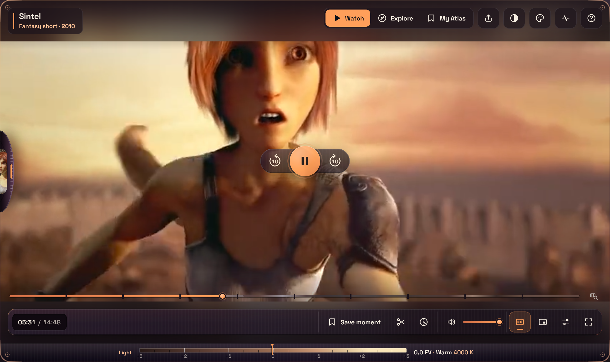
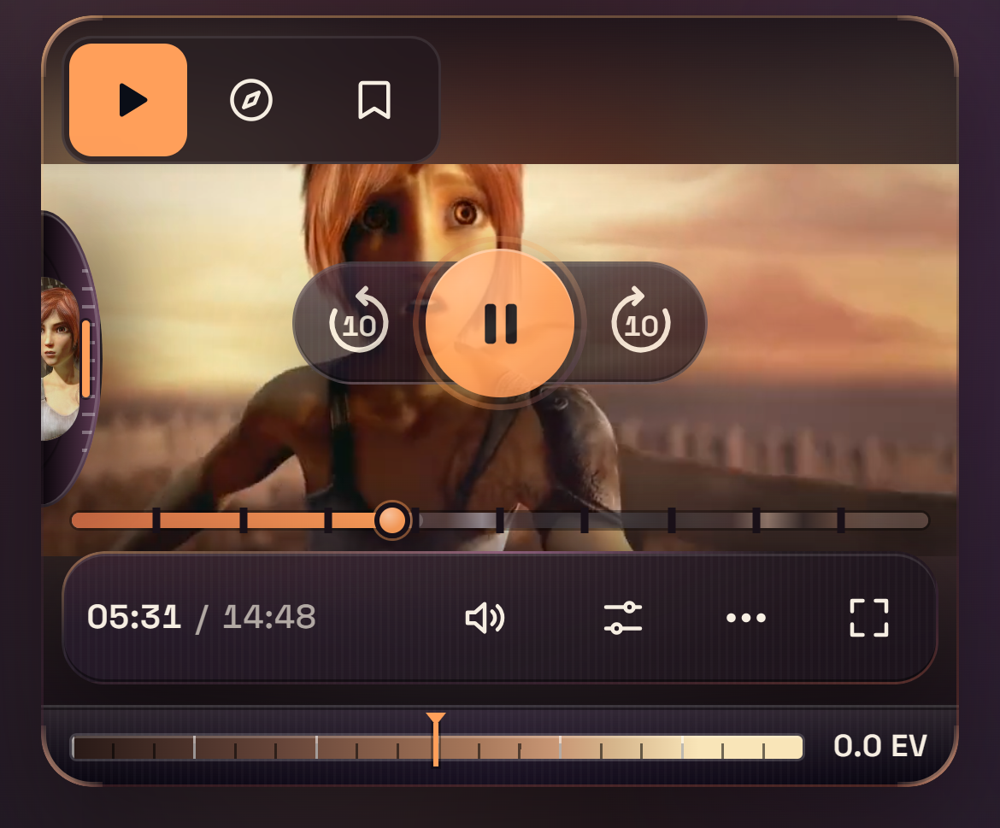
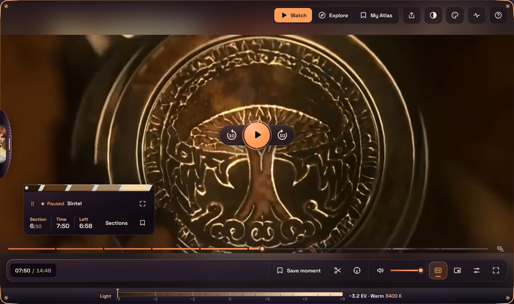
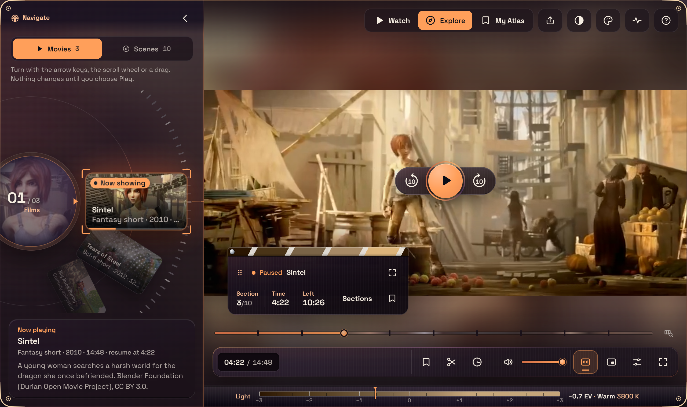

A cinema skin for the Video.js v10 player


XENON treats the player as a small cinema rather than a toolbar. The colour comes from the film: the optical corners and the Lightmeter take their light from the frame, and pausing turns the frame into a Film Slate.
Everything else stays quiet, with one accent and one typeface, so it can sit inside someone else’s site.

